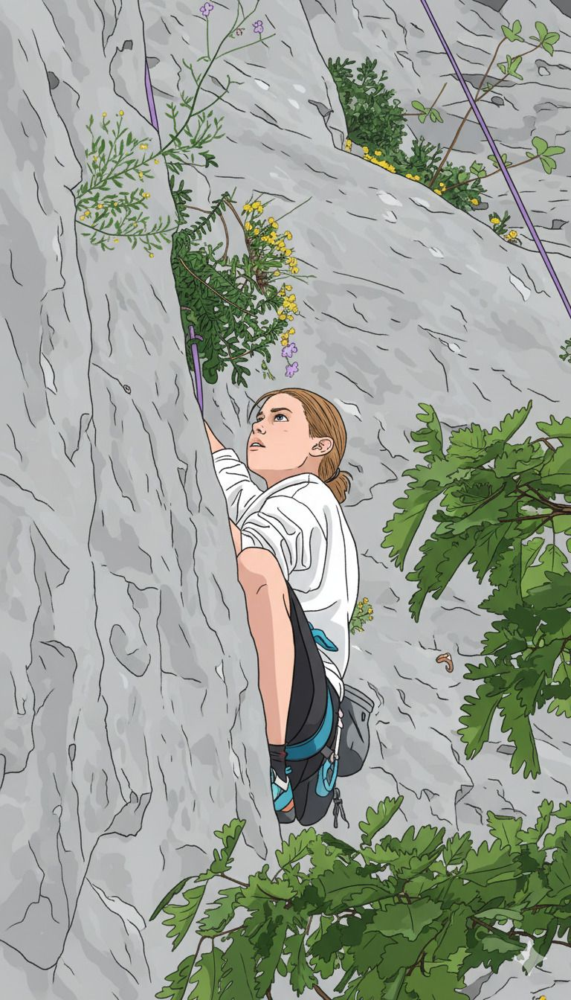

TD-
Grand mur compact surplombant la forêt : des voies soutenues du 5a au 7c, dont la grande classique La TD-.

Touchez une voie pour voir ses infos, appui long pour la retrouver dans la liste.
-
0
Quezal
5aFissure cool.
René Hopf
-
1
La zizine
3a+Initiation.
René Hopf
-
2
Barbapatoune
5cMur sympathique ! Petit surplomb final.
René Hopf
-
3
Anubis
5cJoli mur avec une fin délicate. Traverser à droite avant la rampe plate.
René Hopf
-
4
Psychiadélice
5c+La première voie « moderne » de Bouilland. Très variée et intéressante. Merci René.
René Hopf
-
5
RDV en terrain connu
6cUn mur compact, de belles prises, que demander de plus ? Voie exigeante qui flirte au milieu avec « Nérouine ».
Jean-Yves Salin
-
6
Nérouine
6bUn beau mur raide donne accès à une rampe inversée malcommode. Sortie à gauche dans le petit dévers.
René Hopf
-
7
Wall street
7aUn départ bloc, puis un mur bien soutenu. Beau chalenge à vue !
René Hopf
-
8
La TD-
6aGrande classique. Départ physique. Le crux se situe au milieu pour accéder à la petite conque, pas si simple !
René Hopf
-
9
Idylle
7aMême départ que « La TD- » puis tout droit dans le mur, jusqu'à la conque où l'on traverse à droite (crux).
René Hopf
-
10
Pépito
7b+Très beau mur au départ, redoutable pas de bloc pour rejoindre à gauche la sortie d'« Idylle » (un méchant trou à tenir main gauche).
Jean-Yves Salin
-
11
Eden pulmonaire
7cTrès belle voie dans du rocher compact. Le crux final est redoutable !
René Hopf
-
12
Onirik
6bTrès belle fissure !
René Hopf
-
13
La bonté du boulanger
7a+Très belle voie soutenue. En mémoire du gentil boulanger de Savigny.
Jean-Yves Salin
-
14
Pyromania
7bDépart physique suivi d'un gros pas de bloc sur mauvaises prises, tout un programme !
René Hopf
-
15
Géométrie dans l'espace
?Après les bâches du départ, on rentre dans une dalle splendide. Itinéraire de grande classe !
Jean-Yves Salin
-
16
Égologie
5aTout se joue dans le dièdre au départ. Fin plus facile.
René Hopf
-
17
Toto
8a+Joe Biden
-
18
Nouvelle voie
5cJoe
-
19
Nouvelle voie
6cPhilippe Caseiro
-
20
Ma belle voie
7c+Une belle voie
Philippe Caseiro
